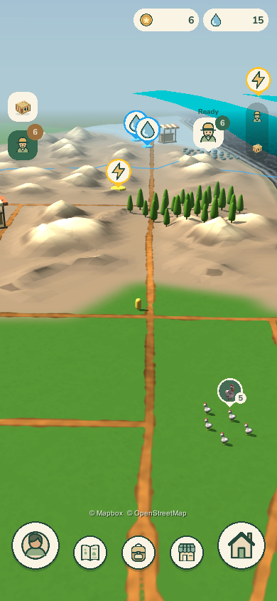

A mockup of the species library: one entry per species, library stars, and a lore page for each. It grows from the game's Wildlings panel. Critters are ordinary animals caught in traps; Wildlings are the game's own creatures, caught with a dance and a lasso. The two sit under separate tabs, and the stars feed the house level. Content comes from the capture-ladder study. The player's catches are made up, and every number is a placeholder.
